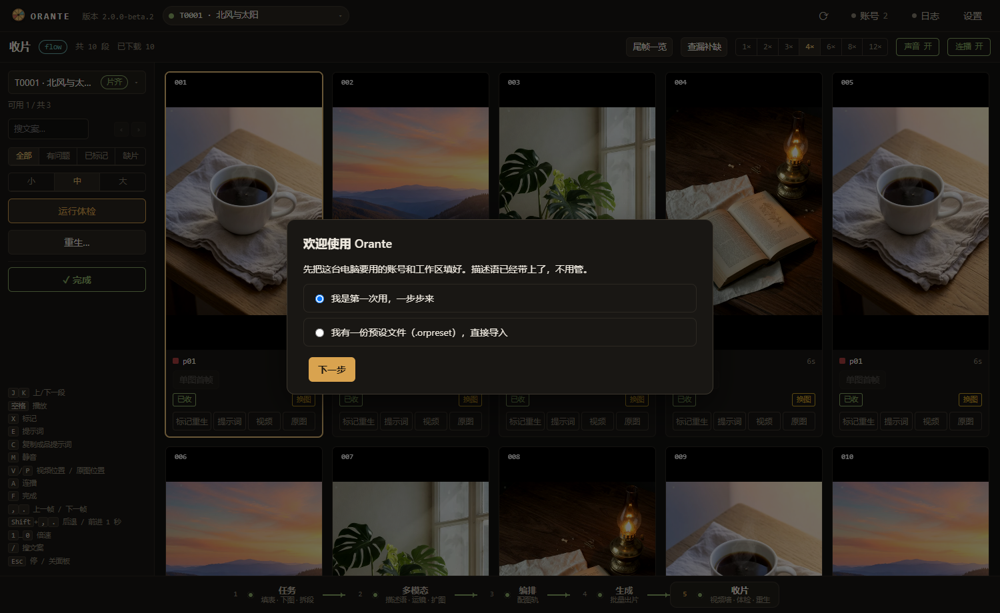
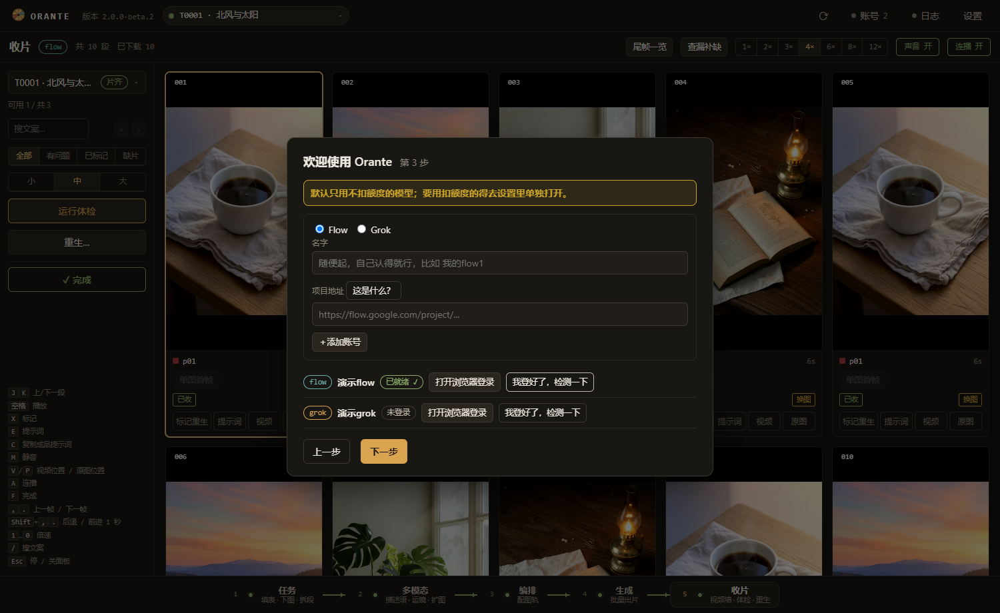
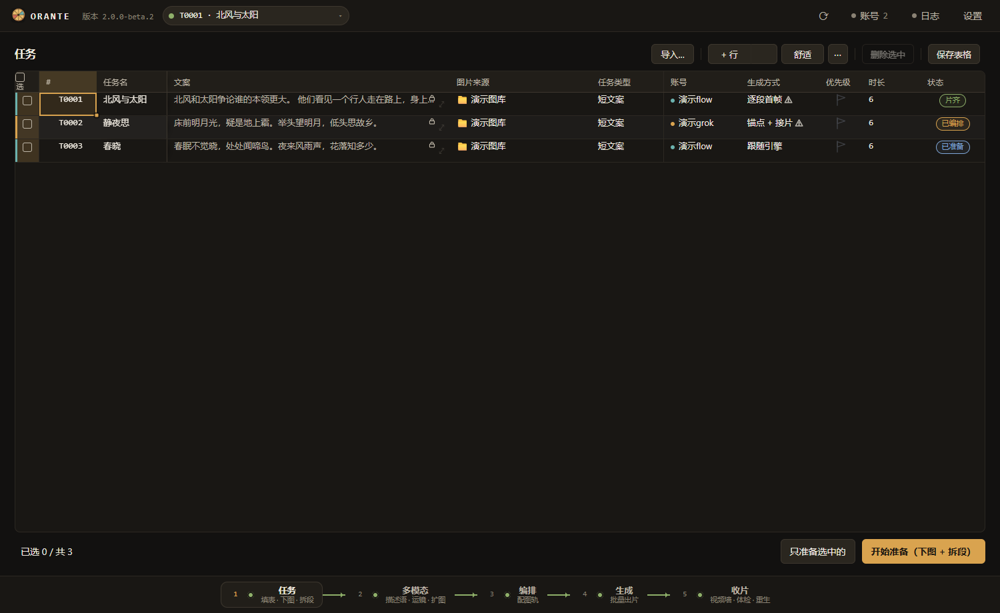
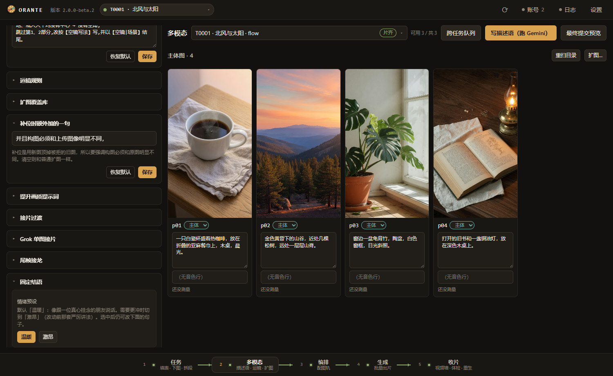
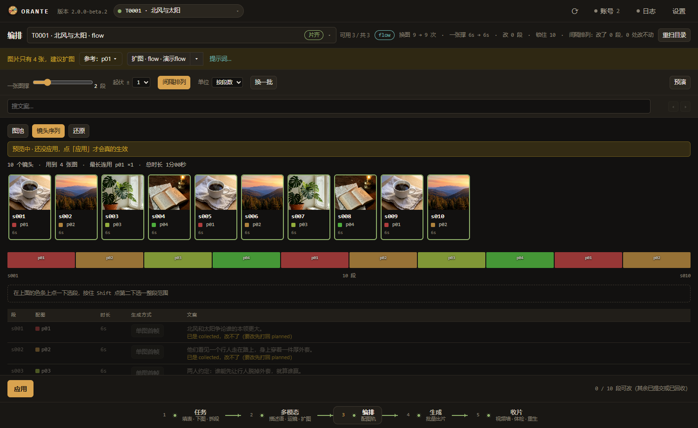
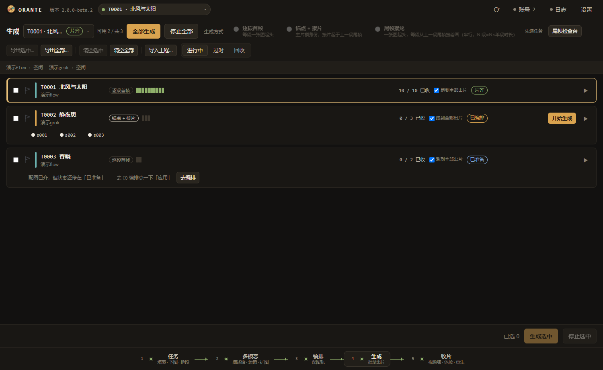
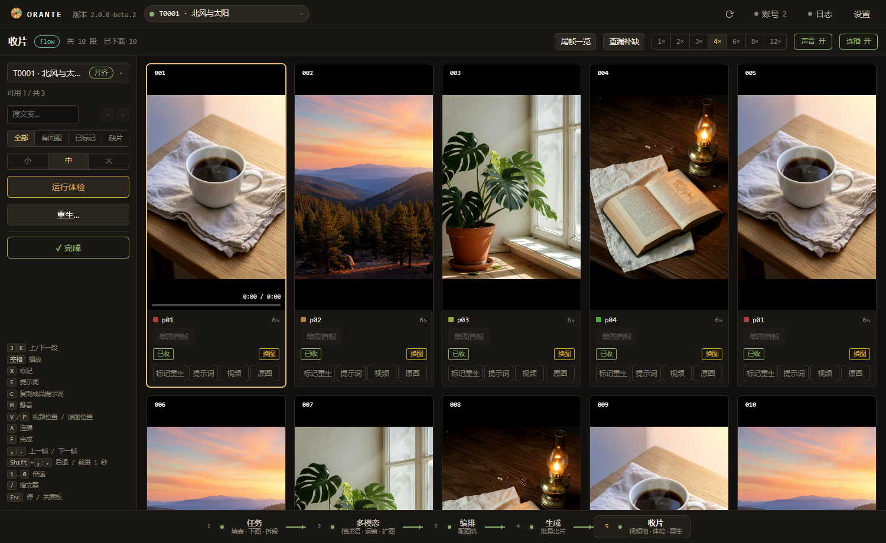
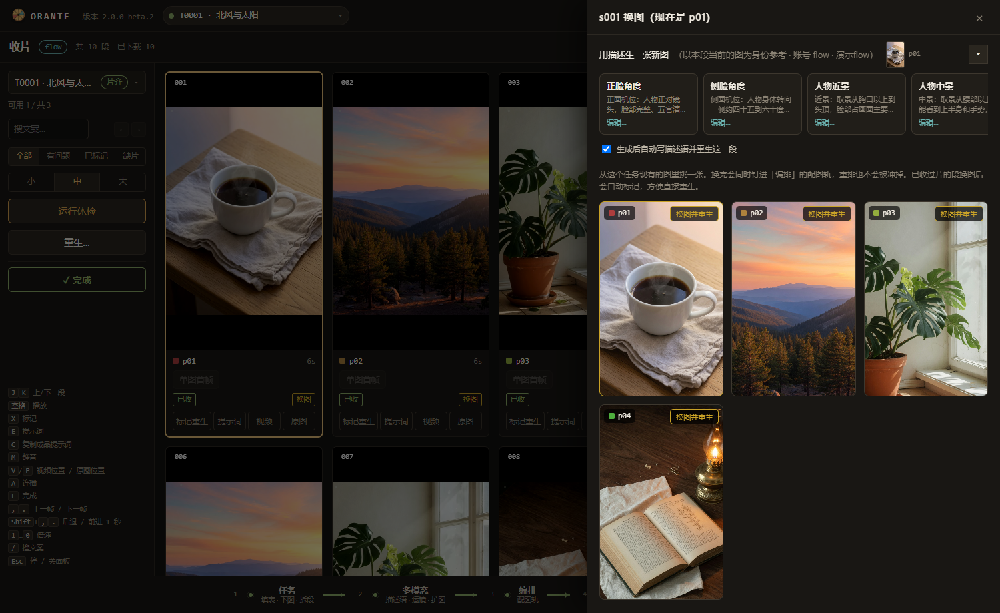
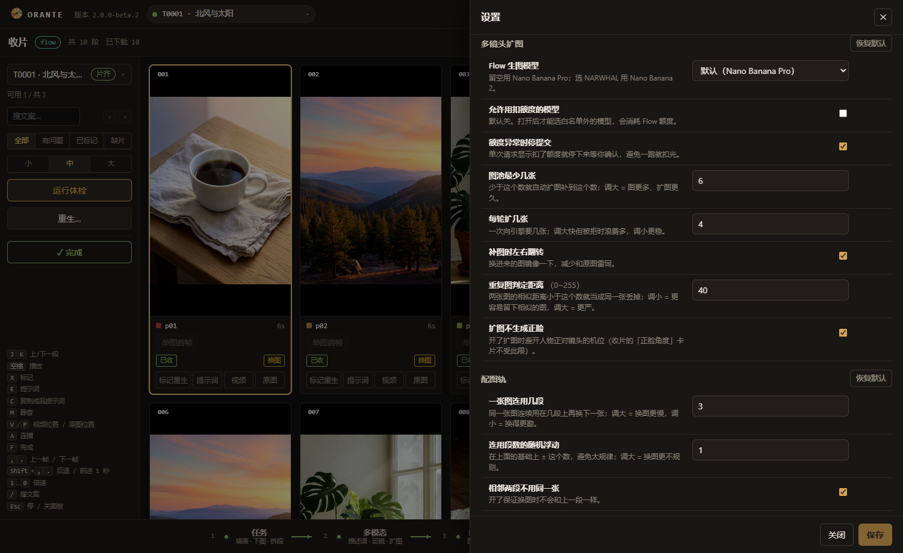

这是什么
Orante 是一台制片台。你给它一段文案和几张人物图，它把文案切成一段一段，给每段配好图、写好提示词，排队交给 Flow 或 Grok 去生成视频，生成完自己下载、自己体检、自己把不合格的挑出来。你只需要在最后一步看片子。
它替你干掉的是什么活
手动做一条五分钟的口播视频，流程大概是这样：把文案切成三四十段 → 每段想一句画面描述 → 打开 Flow 上传图、贴提示词、点生成 → 等 → 下载 → 发现第 17 段人物穿帮 → 重来一次 → 记不清哪几段已经好了……三四十段来回，一个下午就没了，而且极容易漏。
Orante 把这套流程变成五个按钮。切段、配图、写描述语、提交、轮询、下载、校验、重生，全部自动；人只在两个地方做判断：编排的时候看一眼图配得对不对，收片的时候看一眼片子行不行。
它不是一个"AI 视频生成器"——视频是 Flow 和 Grok 生成的。Orante 是那个替你盯着几十条任务、并且不会数错的调度台。
五个面板，就是五道工序
顶上那排编号就是流程顺序，从左到右走完，片子就出来了。每一道做完，下一道才会亮。
两个引擎，各有各的脾气
Flow Google Flow
接口直连，稳、快、可以多条并行。支持首尾双图，接片两头都能对上。
默认只用不扣额度的 Lite 档模型。
Grok xAI Grok Imagine
走浏览器页面操作，慢一些，但人声更自然。只支持单图起片。
同一条片子里别混用两个引擎——两边的声音差别很明显，会跳戏。
两个引擎都用你自己的账号。Orante 会拉起一个独立的 Chrome，你在里面登录一次，之后它就用那份登录态干活。账号可以加很多个，不同任务分给不同账号并行跑。
需要你有什么
| 东西 | 说明 |
|---|---|
| Windows 10 / 11 | 目前只在 Windows 上跑 |
| Python 3.10 以上 | 从 python.org 装，安装时务必勾上 Add to PATH |
| Google Chrome | 本机已经装的那个就行，不用另外下载浏览器 |
| Flow 或 Grok 账号 | 至少一个，能正常登录并生成视频 |
| Gemini API Key | 可选。有它才能自动写描述语，aistudio.google.com 免费申请 |
第一次启动会联网装依赖（两三分钟），但不会去下载 Playwright 自带的那个 300 MB 的浏览器。Orante 只是把你本机的 Chrome 拉起来，用调试端口接上去。
装上它
整个过程只有一步半：解压，双击。
- 解压到纯英文路径
比如
D:\Orante。路径里不要有中文、空格也尽量避免——Python 的虚拟环境和批处理脚本在中文路径下会出各种奇怪的错。别解压到桌面或"下载"（这两个路径在中文系统上通常含中文）。 - 双击
Orante2.bat第一次会弹出一个黑窗口，在建虚拟环境、联网装依赖，大约两三分钟。这个黑窗口只有第一次出现，装完就再也不会有了。
- 软件窗口起来，向导自动弹出
接着走第三章。
第一次跑通之后，桌面和开始菜单上会自动出现带图标的 Orante。以后从那个图标启动，没有黑窗口，任务管理器里就是一个独立进程。
先正常启动软件，然后右键任务栏上的 Orante 图标 → 固定到任务栏。这样钉出来的快捷方式身份是对的。
快捷方式不小心删了？双击 tools\创建快捷方式.bat 可以重建。
杀毒软件报毒 / 文件被删
这个包里没有任何可执行程序，全是纯文本：.py、.js、.json、.bat、.md 加几张 .png。你可以用记事本打开任意一个看，里面是什么一目了然。
即便如此，少数杀毒软件仍可能拦 Orante2.bat，因为它做了两件"看起来可疑"的事：建一个 Python 虚拟环境，然后联网 pip install 装依赖。这是误报，不是病毒。
装完之后还有两样会被报，它们是 pip 自己装出来的、改不掉：.venv\Scripts\python.exe（建虚拟环境时 Windows 会复制一份 Python 解释器过去）和 playwright\driver\node.exe（playwright 自带的驱动）。两个都是官方发布的正规程序，只是被复制到你的用户目录、没有"信誉记录"，启发式引擎就爱管闲事。
顺带澄清一句常被误会的事：Orante 从不下载任何浏览器，它连的是你自己电脑上已经装好的 Chrome（调试端口）。
另外记住顺序：先把文件夹加进排除，再解压安装；反过来装到一半又会被咬。
- 先看它报的是什么
打开杀毒软件的隔离区，看报的哪个文件、什么名字。名字里带
!ml、Heur、AdvML、Gen:Variant、susgen这些字样的，基本都是启发式误报——意思是"我猜它像病毒"，不是"我认出它是病毒"。 - 把解压目录加进信任区
Windows 安全中心：病毒和威胁防护 → 管理设置 → 排除项 → 添加文件夹，选
D:\Orante。
360 / 火绒 / 腾讯电脑管家：在"信任区"里添加这个文件夹。
加完重新解压一次，因为被删掉的文件不会自己回来。 - 还不放心？
把被报的文件传到 virustotal.com：70 多个引擎里只有零星几个报、而且报的是上面那些名字，就是误报。
不要为此关掉杀毒软件。加一个目录排除就够了，关掉整个防护是拿整台机器去换一个软件能跑。
第一次设置
第一次启动会自动弹出向导。先问你一个岔路口：
- 我是第一次用，一步步来 —— 默认，走下面四步。
- 我有一份预设文件（.orpreset），直接导入 —— 换了新机器、手里有一份备份的走这条，账号、Key、提示词一次全回来，四步都不用填。

.orpreset 文件，全新安装是没有的。第一步 · 环境自检
五项全自动检查：Python 版本、能不能找到 Chrome、端口有没有被占、工作区能不能写、依赖装齐没有。不通过的项后面会跟一句人话告诉你怎么办。
| 不通过 | 怎么办 |
|---|---|
| Python 版本太低 | 去 python.org 装 3.10 以上，安装时勾 Add to PATH，装完重启软件 |
| 找不到 Chrome | 先装 Google Chrome。装在非默认位置的话，设一个系统环境变量 ORANTE_CHROME 指向 chrome.exe 的完整路径 |
| 端口被占 | 这里直接把 9400 改成 9401（旁边就有输入框）。多半是已经开着一个 Orante 了 |
| 工作区写不进去 | 换一个目录，或者检查那个盘是不是满了 / 只读 |
| 依赖没装齐 | 关掉软件，再双击一次 Orante2.bat，它会自己补装 |
第二步 · 工作区
选成片的输出目录，默认是 Orante\workspace。生成好的视频、图片、工程文件都会按 日期 \ 版本 \ 任务 放在这里。
挑一个空间大的盘。视频文件累积得很快，一个几十段的任务连同中间产物（候选图、尾帧、废弃片）可以到几个 GB。
第三步 · 账号（这一步最关键）
至少要加一个账号并且状态变绿，才能往下走。
- 选引擎
Flow 还是 Grok。
- 起个名字
随便起，自己认得就行，比如
我的flow1。这个名字只在软件里显示。 - Flow 还要填项目地址
去 Flow 里新建一个项目，把浏览器地址栏那一串完整复制过来。Grok 不需要这一项。
- 点打开浏览器登录
会弹出一个独立的 Chrome 窗口（不是你平时用的那个，是 Orante 专用的）。在里面正常登录一次。登完不要关它，出片的时候要用。
- 点我登好了，检测一下
状态变成绿色 已就绪 ✓ 就成了。想加更多账号就重复这几步。

Flow 默认只用不扣额度的 Lite 档模型。要用会扣额度的模型，得去 设置 → 多镜头扩图 里把允许用扣额度的模型打开，后果自负。
另外注意：如果几个 Flow 账号在同一个 Google 家庭组里，额度是共享的——别人用掉了你这边也会少。
第四步 · 多模态 Key（可以跳过）
填 Gemini API Key，旁边有测一下按钮，会真发一次请求验证。aistudio.google.com 免费申请。
跳过也能用，只是 2多模态 里的自动写描述语用不了，每张图的描述语都得自己手写。图一多会很累，建议还是填上。
点完成，向导关闭，落到 1任务 面板。以后想重新走一遍，设置抽屉里有重新运行向导。
跑通第一条片子
下面按 1→5 的顺序走一遍完整流程。第一次建议找一段短文案（三五百字）先跑通，熟了再上长的。
简单任务：不填文案
只有图、没有口播稿时，可以文案留空。系统按主体图一图一段拆段，准备后自动排好配图；②③ 标「可跳过」，但描述语仍要齐。
| 步骤 | 做什么 |
|---|---|
| 1任务 | 文案留空 → 准备 → 状态到「已编排」 |
| 2多模态 | 每张主体图都要有描述语（这就是全部提示词） |
| 3编排 | 一般可跳过；灰条说明已自动排好 |
| 4→5 | 照常生成、收片 |
有文案的任务即使只有一张主体图，也不会自动跳过编排，黄条扩图建议也还在。只有文案为空才算简单任务。
1 任务 —— 填表、下图、拆段
这个面板是一张表格，一行就是一条视频。像 Excel 一样用：能粘贴、能拖拽填充、能查找替换、能导入 csv。

每一列填什么
| 列 | 填什么 |
|---|---|
| 任务名 | 自己认得就行。会变成输出目录的名字，别用 \ / : * ? 这些符号 |
| 文案 | 整段口播稿贴进来。这是唯一必填的内容，软件会按它切段 |
| 图片来源 | 本地文件夹路径，或者 Google Drive 链接。人物图放这里 |
| 任务类型 | 长文案 / 短文案，影响切段的粒度 |
| 账号 | 用哪个账号出片。不同任务分给不同账号可以并行跑 |
| 时长 | 单段视频的目标时长档位 |
| 生成方式 | 跟随引擎 / 逐段首帧 / 锚点 + 接片 / 尾帧接龙。先留"跟随引擎"，第五章再细讲 |
| 状态 | 软件自己填的，不用管 |
填完点开始准备（下图 + 拆段）
这一步软件会：把图片来源里的图下载到任务目录、按文案切段、给每段编号 s001 s002……做完状态变成已准备，2多模态 才会亮。
只想准备其中几行：勾上那几行，点只准备选中的。
已准备之后就不能改文案了。因为段号、配图、提示词全是按那份文案算出来的。真要改，得把任务打回草稿状态重来。所以贴文案之前先通读一遍。
- 表格左下角有未保存的红点提示，关掉软件也不会丢——下次进来会问你要不要恢复。
- Ctrl+F 查找替换，支持整格匹配和全部替换。
- 右上角 更多（按钮上画的是 ⋯）里有导入 csv、导出 TSV、重置列宽。
- 表格会自动标出可能有问题的格子（比如路径不存在），点逐个看挨个检查。
文案列可以留空。类型会显示 —（没有文案，一图一段）。点「开始准备」后按主体图一图一段拆开，并自动排进配图轨，状态直接到「已编排」；顶栏 23 会标「可跳过」。
注意：有文案但只有一张主体图时，行为和以前一样，仍要自己走编排；图少时的黄色扩图提示也还在。
旧任务想把文案挪进每张图的描述语：在表里选中 → 右键「把文案改成描述语…」→ 确认（只处理勾选并确认的；已有成片会跳过）。
2 多模态 —— 给图写描述语
引擎要靠"描述语"知道这张图里是谁、在干什么、什么场景。这一步就是给每张图写这句话。

自动写
填了 Gemini Key 的话，点一下就能把所有图的描述语批量写出来。写完可以逐张改——自动生成的只是初稿，觉得哪句不准就自己动手。
任务多的时候打开跨任务队列：它会一个任务接一个任务地写下去，中间可以暂停、跳过、停止。
提示词的六个可编辑块
这些是拼进每一条提示词的公共部分，改一次全局生效。
| 块 | 管什么 |
|---|---|
| 描述语提示词 | 指挥 Gemini 怎么描述图片。改它 = 改所有自动描述语的风格 |
| 运镜规则 | 镜头怎么动。是一段 JSON，格式错了会当场提示 |
| 固定结语 | 拼在每段提示词最后的那一段，情绪、语气、表演强度都在这里 |
| 问题句子库 | 用来构造设问句的素材 |
| 扩图覆盖库 | 扩图时用哪些机位和动作，见下面 |
| 补位时额外加的一句 | 自动补图时额外附加的要求 |
固定结语那一块上面有个情绪预设开关：温暖和激昂两档。
觉得生成出来的人物"太严厉、有距离感、不够亲切"，切到温暖；要那种慷慨激昂的布道感，切激昂。改完对新生成的段生效，已经出好的片子不受影响。
扩图覆盖库
这是"扩图"功能的素材库——告诉引擎可以从哪些机位、配哪些动作去生成新图，保证扩出来的一批图机位丰富、不雷同。
默认收起成一行一条的摘要（04 观众视角 · B · 权重 3），点展开才变成可编辑的卡片。
| 字段 | 含义 |
|---|---|
| 类别 | A 主力 · B 侧面 · C 空间 · D 收尾。保证一组图里各类机位都有 |
| 正脸机位 | 勾了表示这个机位人物正对镜头。设置里"扩图不生成正脸"开着时会跳过它 |
| 权重 | 1～4，数字越大越常被挑中 |
| 阶段（动作） | 起势 / 展开 / 保持 / 收束——这个动作适合放在一段话的哪个阶段 |
| 提示词 | 会原样拼进扩图提示词 |
顶上会实时显示当前合法组合：N 个——机位 × 动作在规则下能凑出多少种不重样的画面。这个数太小说明库太窄，扩出来的图会雷同。
出厂的库已经调好了。除非你发现扩出来的图机位太单调，或者想加一类特定的镜头，否则不必碰。
描述语就是全部提示词，每张主体图都要有；缺了 4生成 会拦住。开关「静音提示」只在无文案路径生效。
3 编排 —— 把图排到每一段上
这一步决定第几段用第几张图。中间是图池，下面是段落表。

调三个参数，点预演
| 参数 | 作用 |
|---|---|
| 一张图撑 | 同一张图连续用几段（或几秒）再换下一张。调大 = 换图更慢 |
| 起伏 ± | 在上面基础上随机浮动，避免太规律像幻灯片 |
| 间隔排列 | 开着就保证相邻两段不会用同一张图 |
点预演会算出一套方案并直接在中间那条带子上显示编排结果——图的编号不变，但位置和数量会跟着变，你能直观看到这套方案长什么样。上面会有一条黄色提示：预览中 · 还没应用，点「应用」才会真的生效。
不满意就点换一批重新算，或者还原回到图池视图。满意了点应用才真的写进去——只有应用过的方案，生成的时候才算数。
4生成 面板提示"先到 ③ 编排 把配图轨应用一下"，十有八九是只预演了没点应用。回来点一下应用就行。
精细调整
- 钉住某张图：选中段，钉住用…，指定这一段必须用哪张。钉住的不会被重排冲掉。
- 限定图池：让某几段只在指定的几张图里挑。
- 图片右键菜单：复制 / 水平翻转 / 裁切… / 提升画质… / 删除。
图片不够就扩图
图少于设定值时，顶上会出现图片只有 N 张，建议扩图的横幅。勾一张图当参考（图上的 ✓ 标记），点扩图，软件会按覆盖库的机位生成一批新图。
扩图按钮上直接写着用哪个账号，比如 扩图 · flow · 我的flow1。点旁边的 ▾ 可以换：
- 跟随任务账号（默认）—— 用这个任务本身的账号
- 任何一个能生图的账号，Flow Grok 都能选
所以你完全可以用 Flow 做视频、用 Grok 扩图，或者反过来。选中之后这个任务就一直记着，重开软件也不变；想改回去，选第一项跟随任务账号。
提升画质 —— 把裁糊的图救回来
裁切过的图分辨率会掉、会糊，拿它生成视频首帧就不清楚。在图上右键 → 提升画质…：
- 确认框
告诉你用哪个账号（跟扩图同一个，这里也能改）、原图多大、旧图会挪到哪。
- 以这张图为唯一参考重画一遍
要求原模原样，只把清晰度做上去。
- 三道闸验收
① 画面是不是同一张（不是就不换）② 是不是真的更清楚（不是就不换）③ 人物还是不是同一个。哪道没过都不会换，日志里写清楚为什么。
- 换上去
新图顶替原位置，旧图挪到
images\_replaced\，不删。
换完会弹一条提示：有 N 段用了这张图，已出的片子还是旧图的清晰度，给你两个按钮——打回这 {n} 段重生或者先不管。点了才动，不会自作主张让你重跑一堆。
没有文案时这里通常不用动：灰条会写「这个任务只有一种配图方式，已经自动排好了。不用在这里做什么。」。有文案的任务（含单图）仍按原流程编排，扩图黄条照旧。
4 生成 —— 批量出片
到这里基本就是点一下然后等。

选生成方式
顶上的生成方式是三个选项，这是最重要的一个选择，第五章专门讲。选了之后是跟着这个任务走的，每个任务可以不一样。
点全部生成，然后就可以走开了
软件会自己：提交 → 每 6 秒轮询一次 → 出片了就下载 → 校验首帧对不对 → 不合格自动作废重来 → 被引擎拒了自动换张图再试。日志实时刷在下面。
中途要停，点停止全部。停了之后再点全部生成会接着跑，已经收好的段不会重做。
Grok 有时会连着拒收很多张图。软件会自动翻转图片、换参考图、重新提交，一直试到拿到片子为止（有次数上限，防止死循环）。让它跑就行，实在过不去的段会明确标成失败留给你处理。
尾帧检查台（「锚点 + 接片」和「尾帧接龙」都有）
点打开检查台，逐条看接片的首帧和上一段的尾帧对不对得上。
- 红色 = 对不上，得处理：自动换锚点 / 挑锚点… / 改单图重拍 / 重生
- 黄色 = 有点勉强但能用，看一眼觉得行就通过
省事的做法：从头到尾快速翻一遍，然后点全部自动换锚点（红色项）和全部通过（黄色项）。
| 键 | 作用 |
|---|---|
| J / K 或 ↓ / ↑ | 上下条 |
| 空格 | 放行当前 |
| S | 自动换锚点 |
| F | 改单图首帧重拍 |
| Enter / Esc | 放大当前 / 关闭 |
| − / = / 0 | 缩小 / 放大 / 回到 100% |
| 1 / 2 / 3 | 紧凑 / 舒适 / 大图 |
每一段都已经有图时，可点「直接用现在的配图生成」（所有任务都能用）。没有文案又缺描述语时会提示「描述语就是全部提示词」，先回 2多模态 补齐。
5 收片 —— 视频墙、挑毛病、重生
所有片子铺成一面墙，一张卡片一段。这是唯一需要你认真看的地方。

看片子
鼠标移到任意一段上，底部会淡出一条进度条，移开就消失，不挡画面。
- 可以拖：播放中拖，松手继续播；暂停时拖，松手仍暂停。播完停在最右，直接拖回开头再看一遍。
- 可以逐帧：暂停后按 , . 一帧一帧走，按住 Shift 变一秒。检查嘴型、手势、穿帮特别好用。
- 时间气泡显示到帧号。
标记和重生
- 一路看下来，不行的按 X 标记
J K 切上下段，空格 播放暂停。
- 点运行体检
软件自己再校验一遍：文件在不在、时长对不对、首帧是不是拿错了别人的片。有问题的会标出来。
- 标完了点重生…
弹出选段对话框，确认要重做哪几段，然后它自己去跑。
- 重生出来的会打上"新"标
复查过没问题点一下收掉，或者全部标为已看。
换图
片子不行往往是图不行。点某段的换图：
- 从图池里挑一张 —— 点缩略图，选只换图或换图并重生。换完会同时钉进编排的配图轨，重排不会被冲掉。
- 没有合适的图？用描述卡片 —— 见第六章。
尾帧一览 —— 快速过一遍画面问题
点顶上的尾帧一览，把每一段的尾帧从头到尾翻一遍。比一条条打开视频快得多，画面有没有崩、人物有没有跑掉，一眼就看出来。
| 键 | 作用 |
|---|---|
| ← / → | 上一张 / 下一张 |
| 空格 | 在「尾帧」和「本段首帧」之间切换（看衔接） |
| Home / End | 跳到第一张 / 最后一张 |
| Esc | 关闭 |
每张下面显示分辨率、锐度、和参考图的距离、提清过没有。有问题的缩略图带角标。当场就能重生、换图起头、提清这一帧、标记有问题。
收尾
- 拼接成片 —— 把所有段按顺序接成一条完整视频。
- 查漏补缺 —— 读 Cutora 导出的缺失文案清单，交叉核对哪几段漏了。
- ✓ 完成 —— 任务归档。完成之后多数操作会锁住；必要时可以「撤销完成」。
三种生成方式，怎么选
这是全软件最重要的一个选择。它决定每一段视频拿什么当第一帧，直接影响成片的连贯感和你要花的时间。
可以在 1任务 的表格里按任务设，也可以在 4生成 面板顶上改。每个任务互相独立——Grok 的任务用一种、Flow 的任务用另一种，完全可以。
| 方式 | 要几张图 | 连贯感 | 速度 | 什么时候用 |
|---|---|---|---|---|
| 逐段首帧 | 很多张 | 段与段之间是硬切 | 快，能并行 | 默认选择。图多、想要不同机位切换的口播 |
| 锚点 + 接片 | 中等 | 接片处平滑 | 中等 | 想要局部平滑过渡，又要保住人物身份 |
| 尾帧接龙 | 一张 | 接近一镜到底 | 慢，只能串行 | 追求连贯、图很少、能等 |
逐段首帧
每段用一张图起头，各生成各的，互不相干。
- 好处：可以几条同时跑，快；某一段坏了只影响那一段。
- 代价：段与段之间是硬切，画面会跳。
适合大部分情况。配图轨排得好的话，硬切反而像正常剪辑。
锚点 + 接片
主片（锚点）锁住人物身份，中间插的接片从上一段的尾帧接着画。
- Flow 接片用首尾双图，两头都能对上。
- Grok 接片用单图，起于上一段尾帧（Grok 不支持双图，实测双图时首帧根本对不上）。
这个模式有尾帧检查台，接片对不上会标红让你处理。
尾帧接龙
只要一张图。第一段用它，之后每一段都从上一段的尾帧接着画，一路接到底。
起头图 ──▶ s001 ──尾帧──▶ s002 ──尾帧──▶ s003 ──▶ … ──▶ s0NN选中之后下面会多出一行设置：
| 选项 | 说明 |
|---|---|
| 起头图 | 从图池里挑第一张。整条链都从它开始，挑一张清晰、人物完整的 |
| 尾帧描述语 | 变化大才重写（默认）/ 每段都重写 / 一直沿用。尾帧和上一段差不多时沿用描述语，省 Gemini 额度也更稳 |
| 每 N 段提一次清 | 默认 5。见下面 |
尾帧是从视频里截的，视频又是上一张尾帧生的，一代代传下去画质必然递减。所以每 5 段（可改，0 = 关）软件会自动把参考尾帧提升一次画质再往下接——用的就是第四章那套"提升画质"，同样三道闸。没过闸就用原尾帧继续，绝不会因此卡住。
一段做完才能做下一段——因为下一段要用这一段的尾帧。10 段就是 10 倍单段时间，5 个并发用不上。看着并发闲着不是 bug。
它的检查很松，这是故意的
接龙模式下，软件不会因为"这一段画面不像上一段"就把片子拒掉。距离照算照记、超了标黄，仅此而已。只有三种情况才算"严重"并自动换参考图：
- 画面几乎是黑场或纯色
- 糊到没法当首帧（所有候选帧都不够锐）
- 画面里根本没有人
脸小、侧脸、近景、闭眼、嘴半张、构图变了、光线变了——都不算问题，照常往下接。
真碰上严重的，下一段自动退回到最近一个正常的尾帧继续，链条不停；那一段标黄，你可以事后单独重生这一段或者换图起头。
后面已经做好的段不会被自动打回。只在检查台上给后一段标一句"上游尾帧已变"，旁边一个从这里往后重跑，点了才动。
图不够、图不对怎么办
成片质量八成取决于图。这一章把所有"搞图"的手段放在一起。
手段一 · 扩图（批量生一批）
在 3编排 里，勾一张参考图，点扩图。按覆盖库的机位和动作生成一批不同角度的新图。图池太小时用这个。
账号可以单独选，Flow 或 Grok 都行（见第四章）。
手段二 · 提升画质（把糊的救回来）
右键图片 → 提升画质…。原模原样重画一遍，只提清晰度。裁切之后变糊的图用这个。详见第四章 3编排 那节。
手段三 · 描述卡片（定制一张想要的）
在 5收片 点换图，图池缩略图上面有一排卡片：

点一张卡片，软件就按这张卡片的描述语生成一张新图，人物身份由参考图带进去。整条链自动走完：
- 生图
用扩图那个账号，以本段当前的图（接龙模式下是上一段尾帧）为身份参考。
- 新图进图池
是新增一张，不覆盖、不挪走任何旧图。
- 自动写描述语
- 钉到这一段
- 自动重生这一段视频
不想自动重生就取消勾选生成后自动写描述语并重生这一段，先看看图再说。
卡片上的编辑…能直接看到并修改这张卡的描述语，改完保存在软件里，以后一直用这一版。新建可以加任意多张（比如"仰拍"、"背影"、"手部特写"）。
统一管理在 设置 → 换图卡片：新建、复制、排序、删除、恢复出厂四张（自己建的不会丢）。
尾帧接龙的任务整个图池可能只有一张图，没有"别的图"可换。而且很多时候你不是想换一张，是想要某个特定角度。卡片解决的就是这两件事：不用勉为其难地从现有的里挑。
手段四 · 换图起头（接龙模式专用）
接龙链走到某一段效果崩了，在尾帧一览或检查台点换图起头：这一段改用图池里的一张新图重新起头，下一段从这一段的新尾帧接，链条继续。相当于在链条中间接了一次驳。
出问题怎么办
按"症状"找。绝大多数问题在软件里就有解决入口，不用改文件、不用看代码。
装不上 / 起不来
| 症状 | 原因和解法 |
|---|---|
| 双击 bat 闪一下就没了 | 多半是 Python 没装或没进 PATH。双击 tools\13-Orante-Debug.bat，它会带控制台启动并把全部输出写进 data\logs\orante-debug.txt，看最后几行 |
| 窗口起来了但一片空白 | 同样跑 13-Orante-Debug.bat。常见是后台服务没起来，日志里会写明 |
| 提示端口被占 | 已经开着一个 Orante，或者 9400 被别的程序占了。设置 → 界面 → 本机端口 改成 9401，重启 |
| 解压后文件少了 / 报毒 | 看第二章"杀毒软件报毒" |
| 路径里有中文，各种奇怪的错 | 剪切到 D:\Orante 这种纯英文路径，删掉 .venv 文件夹，重新双击 Orante2.bat |
账号和登录
| 症状 | 原因和解法 |
|---|---|
| 检测一直不变绿 | 那个 Chrome 窗口里没真正登录成功，或者被关掉了。点打开浏览器登录重来，登完别关窗口 |
| 找不到 Chrome | 设系统环境变量 ORANTE_CHROME = chrome.exe 的完整路径，重启软件 |
| Flow 额度莫名其妙在掉 | 先确认允许用扣额度的模型是关着的（设置 → 多镜头扩图）。还在掉的话，检查这几个账号是不是在同一个 Google 家庭组——家庭组的额度是共享的，别人用了你也少 |
| Grok 一直"被拒" | 正常现象，软件会自动翻转图片、换参考图重试。让它跑。全都过不去的话换一张参考图再扩一批 |
生成卡住
| 症状 | 原因和解法 |
|---|---|
| 日志停在"在生成 N 条"很久不动 | 先看 Chrome 里那个标签页。片子已经生成好了却不收，多半是页面被跳走了；停掉任务再点全部生成会重新接管 |
| 某段反复重生也下载不下来 | 别再点重生了。换个路子：换图用别的图，或者用描述卡片生一张新的，或者在检查台改单图重拍 |
| 提示"先到 ③ 编排把配图轨应用一下" | 预演了没点应用。回去点一下 |
| 某段一直显示"等 sXXX 收片" | 上一段还没收好，或者它的尾帧没抽出来。去检查台看那一段的状态 |
| 接龙模式并发闲着 | 正常，接龙是串行的，见第五章 |
成片质量
| 症状 | 原因和解法 |
|---|---|
| 人物说话太严厉、有距离感 | 2多模态 → 情绪预设 切到温暖，然后重生那几段 |
| 画面糊 | 源图就糊。右键提升画质…，然后打回那几段重生 |
| 段与段之间跳变太厉害 | 换锚点 + 接片或尾帧接龙，见第五章 |
| 想要某个特定角度，图池里没有 | 用描述卡片，见第六章 |
| 同一张图连着用太多段 | 3编排 里把一张图撑调小，重新预演 + 应用 |
| 接龙中间某一段崩了 | 在尾帧一览里点重生这一段或换图起头。不用整条重跑 |
| 扩出来的图机位太单调 | 2多模态 → 扩图覆盖库，看顶上"当前合法组合"的数字。太小就加几条机位 |
几乎所有"跑着跑着不对劲"的问题，第一步都是看日志。4生成 面板每个任务下面就有实时日志，写得是人话。实在看不懂，把 data\logs\ 里对应的那个日志文件整个发给能帮你的人。
模板套装：一键换掉整套风格
做不同风格的片子时，不必一项项改提示词。顶栏右上角的 ● 套装名 ▾ 就是你当前站在哪一套里工作；切换 = 整套配置一起换。
套装不是「改完再打包」。正确顺序是：先新建套装并切进去 → 再在里面改提示词 / 卡片 / 生成参数。你改的每一处都属于当前套装。出厂自带「默认套装」，你永远在某一个套装里面。
一套装里有什么
| 组 | 装什么 |
|---|---|
| 提示词 | 描述语、运镜、结语、问题句、补位、upscale / bridge / chain、情绪预设等 |
| 扩图覆盖库 | 机位 × 动作覆盖 |
| 换图卡片 | 收片换图用的描述卡片 |
| 生成参数 | 生成方式、拆段、配图轨、扩图、生图模型等 |
| 账号选用 | 启用哪些账号、默认账号、并发——不含登录态，切换不会动 cookie |
任务、工程、界面偏好、API Key 本体等不进套装。
怎么切换
- 点顶栏套装名
打开套装面板，卡片上能看到提示词块数、卡片数、账号数、上次使用时间。
- 点另一张卡的「切换」
若当前有未保存改动：看设置「切换套装时自动保存当前改动」——开着会先存回旧套装再切；关着会问你「保存并切换 / 不保存」。
- 正在生成时
也可以直接切。多个窗口可以各自用不同套装；同一账号仍然不会同时跑两个生成，换一个账号即可并行。
新建套装（主路径）
- 面板里点 + 新建套装…
- 起名字、可选备注与颜色
- 内容从哪来：复制当前套装 / 复制别的套装 / 出厂默认内容
- 点 创建并切换，之后在 ②③ 里改的东西都属于新套装
卡片右上角 ⋯ 还可：重命名、改颜色、复制一份、另存为新套装、导出 .orpreset、删除（出厂套装不能删，可「恢复出厂内容」）。
模板套装是日常换风格的工作区。设置 → 预设 → 导出预设… 的加密 .orpreset 才是整机备份（可含登录态）。套装也能导出/导入为预设文件，但日常换风格请用顶栏切换，不要每次都走整包导入。
多开窗口
可以同时开几个 Orante 窗口并行干活；同一个账号同一时刻仍然只能跑一个生成任务（跨窗口锁）。
- 桌面图标 / 普通启动：默认聚焦已有窗口（防误触双开）
- 需要新窗口：用快捷方式「Orante（新窗口）」，或顶栏 ＋ 新窗口
- 端口从 9400 起自动占空位；指定端口被占用会明确报错
设置与备份
设置抽屉
所有参数都有中文名和一句话说明，说明里写清楚"调大调小会怎样"。鼠标悬停某一行才会露出灰色的英文键名（那是给排查问题用的）。
每组右边有恢复默认，每一行悬停时有恢复此项——改错一个不用整组恢复。

最值得知道的几项
| 在哪 | 项 | 什么时候动它 |
|---|---|---|
| 多镜头扩图 | 允许用扣额度的模型 | 默认关着。不确定就别开 |
| 多镜头扩图 | 扩图不生成正脸 | 开着会避开正对镜头的机位。收片里的"正脸角度"卡片不受它限制 |
| 配图轨 | 一张图连用几段 | 觉得换图太频繁或太呆板时调 |
| 引擎 | 同时生成几条 | 机器扛不住或账号被限流时调小 |
| 生成方式 | 新任务默认生成方式 | 固定用某一种就设在这里，省得每次改 |
| 界面 | 本机端口 | 9400 被占时改。改完要重启 |
| 自动归档 | 自动归档做完的任务 | 任务列表越来越长的时候开，做完 N 天的自动打包移出 |
预设 —— 把整套配置存下来
这件事现在就该做一次。设置 → 预设 → 导出预设…：账号、登录态、API Key、提示词、换图卡片、所有参数，打成一个加密的 .orpreset 文件。
- 勾要带哪几组
默认全勾。一起带上登录态（cookie）建议也勾上——这样换机器不用重新登录。
- 输两遍密码
整包加密。这个文件请当成密码一样保管，里面有你的登录态和 Key。
- 存到安全的地方
U 盘、云盘、另一块硬盘。别只存在同一台机器上。
换机器 / 重装之后，向导第一步选我有一份预设文件，选文件、输密码，一步到位。
导入前会先显示变更预览（覆盖几项、新增几项、哪几块提示词会被盖掉），再让你选：冲突以预设为准 / 冲突保留本机 / 整包替换。
"整包替换"会先自动备份一份当前配置，手滑了还能导回来。
恢复出厂
设置 → 预设 → 恢复出厂…：清空账号、接口池、设置里的非默认项、提示词改动、Chrome 登录目录。任务和已经做完的工程还在。要手动输入确认才执行，而且会先自动备份一份预设。
快捷键总表
5 收片
| 键 | 作用 |
|---|---|
| J / K | 下一段 / 上一段 |
| 空格 | 播放 / 暂停 |
| , / . | 上一帧 / 下一帧 |
| Shift + , / . | 后退 / 前进 1 秒 |
| X | 标记这一段要重生 |
| E | 展开 / 收起成品提示词 |
| C | 复制成品提示词 |
| M | 静音开关 |
| V / P | 视频位置 / 原图位置（打开文件夹） |
| A | 连播开关 |
| F | 完成 |
| Esc | 停止播放 / 关闭当前面板 |
尾帧检查台（4 生成）
| 键 | 作用 |
|---|---|
| J / K 或 ↓ / ↑ | 上下条 |
| 空格 | 放行当前 |
| S | 自动换锚点 |
| F | 改单图首帧重拍 |
| Enter / Esc | 放大当前 / 关闭 |
| − / = / 0 | 缩小 / 放大 / 回到 100% |
| 1 / 2 / 3 | 紧凑 / 舒适 / 大图 |
尾帧一览（5 收片）
| 键 | 作用 |
|---|---|
| ← / → | 上一张 / 下一张 |
| 空格 | 尾帧 ↔ 本段首帧 |
| Home / End | 第一张 / 最后一张 |
| Esc | 关闭 |
1 任务 表格
| 键 | 作用 |
|---|---|
| Ctrl + F | 查找 / 替换 |
| Ctrl + C / V | 复制 / 粘贴（支持整块区域） |
| Ctrl + S | 保存表格 |
文件都放哪了
软件目录
D:\Orante\
├─ Orante2.bat 启动（第一次跑它）
├─ orante\ 程序本体
├─ ui\ 界面
├─ data\
│ ├─ orante.db 你的账号、任务、设置都在这一个文件里
│ ├─ chrome\ 各账号的 Chrome 登录态
│ └─ logs\ 日志。出问题先看这里
├─ workspace\ 成片默认输出位置
├─ 说明文档\ 就是你正在看的这份
└─ tools\
├─ 13-Orante-Debug.bat 起不来的时候双击它
└─ 创建快捷方式.bat 重建桌面图标data\orante.db —— 删了等于全部重来。data\chrome\ —— 删了所有账号都要重新登录。
想搬家或者做备份，用 设置 → 预设 → 导出预设，别手动拷贝这些。
任务目录
每个任务在工作区下有自己的文件夹：
workspace\2026-09-17\A\T0022-任务名\
├─ manifest.json 这个任务的全部状态
├─ images\ 配图
│ ├─ _replaced\ 被换掉的旧图（提升画质、换图产生的）
│ └─ _upscale\ 提清没过闸的候选图
├─ clips\ 生成好的视频
│ └─ _弃用\ 校验没过被作废的片子
└─ tails\ 每一段的尾帧
└─ _old\ 重生 / 提清之前的旧尾帧不管是提升画质、换图还是自动补图，旧图都是移动到 _replaced\，不是删除。发现换错了，去那个文件夹里能找回来。视频同理，作废的在 clips\_弃用\。
Orante 2.0 · 使用说明
遇到这份文档没写到的问题，把 data\logs\ 里的日志和一句话描述发给能帮你的人，日志里写的是人话。